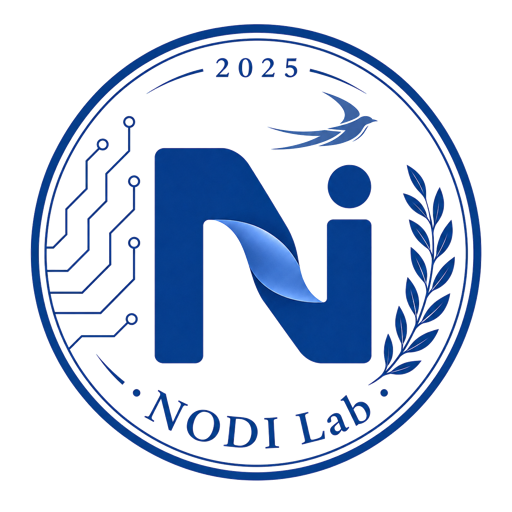

网络优化与云边系统
研究网络优化、内容分发、缓存管理与云边协同，围绕服务部署、资源管理与弹性调度构建高效的网络与计算基础设施。

NODI Lab Jilin University01 / RESEARCH
研究网络优化、内容分发、缓存管理与云边协同，围绕服务部署、资源管理与弹性调度构建高效的网络与计算基础设施。
研究联邦学习、分布式训练、去中心化协同、鲁棒聚合、攻击防御与隐私保护，构建安全、可靠、可扩展的分布式智能系统。
研究大模型优化、持续学习、推理增强、安全对齐与可信推理，支撑大模型系统在真实场景中的高效部署与可靠应用。
研究智能体规划与决策、工具调用、多智能体协作及效率优化，探索提示注入防御、权限控制、可追溯性与安全评估方法。
面向生物信息、医学诊断、药物设计与 DNA 存储等科学问题，研究融合领域知识、机制建模与数据驱动方法的 AI for Science。
研究推荐系统、序列建模、图学习与个性化决策，服务复杂交互场景下的数据理解、建模与推荐任务。
02 / UPDATES
03 / PEOPLE
实验室负责人
2016年、2019年先后于南开大学获得学士、硕士学位，2023年获纽约州立大学宾汉姆顿分校（SUNY-Binghamton）电子与计算机工程博士学位。2024年于加州大学默塞德分校（UC, Merced）从事博士后研究，同年入选国家高层次青年人才计划。2025年1月加入吉林大学计算机学院，任教授、博士生导师，兼任院长助理和国家级物联网虚拟仿真教学中心主任。
04 / LAB LIFE
05 / PUBLICATIONS
PUBLICATION RECORD
06 / FUNDED PROJECTS
执行期：2025.01–2027.12
支持青年学者自主开展创新性研究，为形成稳定研究方向与建设高水平科研团队提供持续基础。
执行期：2027.01–2030.12
围绕自然科学基础研究中的重要问题，持续开展方法创新、理论分析、系统实现与实验验证。
执行期：2026.01–2028.12
面向基础与应用基础研究需求，推进具有科学价值和区域影响力的研究工作。
07 / CONTACT
如需申请 2027 年博士和硕士，或开展学术合作与项目交流，可通过以下邮箱联系 NODI Lab。